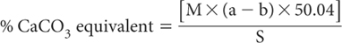

Many soils, particularly those in arid and semi-arid regions such as the Calcarosols of Australia (Anon 2001), contain solid-phase alkaline earth carbonates. Indeed, the presence of solid-phase carbonates is an important diagnostic feature in stratigraphic and land use studies (Wetherby and Oades 1975) and in elucidating pedogenic processes. The presence or absence of carbonate is significant; the actual amount present is less important in pedogenic studies (Martin and Reeve 1955).
The most common types of alkaline earth carbonates are calcite (CaCO3) – or a poorly crystalline equivalent – and dolomite [CaCO3•MgCO3 or CaMg(CO3)2]. Less common soil carbonates include sodium carbonate (Na2CO3) and siderite (FeCO3). Soluble carbonates are not usually present in soils until the pH exceeds 9.5, although bicarbonates may be present at much lower soil pH values (Heanes 1981).
Calcium carbonate (CaCO3) equivalent is a criterion in Soil Taxonomy (Soil Survey Staff 1975). It is used to define petrocalcic and calcic horizons, plus carbonatic and calcareous soil classes. In addition to classification and pedogenic implications, the presence and distribution of carbonate minerals affects soil pH and fertility, plant available water capacity, clay flocculation, etc. (e.g. Doner and Lynn 1989). Accordingly, there are many and varied reasons for quantifying the types and quantities of alkaline earth carbonates in soils.
Method 6E1 uses loss-on-ignition to provide a semi-quantitative estimate of soil carbonate content, simultaneously with a semi-quantitative estimate of TOC. This chapter provides further laboratory and field tests to quantify (qualitatively and semi-quantitatively) the carbonate content of soils. The first laboratory method (19A1) is a rapid titration procedure developed from the method of Piper (1944), as compiled by van Reeuwijk (1986). It yields approximate values only. The second (19B1) is a manometric procedure with the ability to give satisfactory results for both calcitic and dolomitic minerals (Martin and Reeve 1955; Skinner and Halstead 1958; Skinner et al. 1959). It performed well in slightly modified form in comparative tests of four methods for soil carbonates (McKeague and Sheldrick 1976). Method 19B2 is similar but more convenient, as it uses a transducer to measure the increase in pressure generated by CO2 released after reaction with 5.5 M hydrochloric acid (HCl). Two qualitative field tests, also involving the careful use of HCl solutions, are provided as Methods 19C1 and 19D1. Table 19.1 contains summary details of all the methods.
In this titration procedure, soil is treated with dilute HCl and residual acid is titrated with standard 0.5 M sodium hydroxide (NaOH). Results are referred to as ‘CaCO3 equivalent’ since the reaction is not selective for calcite; other carbonates including dolomite will be included to some extent.
Table 19.1. Summary detaÕs of method codes, method titles, technologies and notes for soÕ carbonate tests described in this chapter†.
Code |
Technology |
Test method |
Notes |
19A1 |
Chemical reaction with dilute HCl; residual acid titrated with standard 0.5 M NaOH. |
Carbonates – rapid titration. |
Semi-quantatitive for carbonates. |
19B1 |
Increase in pressure generated by the CO2 released after reaction with HCl at room temperature. |
Carbonates by pressure change – manometric. |
Semi-quantatitive for carbonates plus indication of dolomite from reaction rate plots. |
19B2 |
|
Carbonates by pressure change – transducer. |
Semi-quantatitive for carbonates. |
19C1 |
Chemical reaction with dilute HCl and subsequent observations. |
Spot field test for the presence of soil carbonates with HCl |
Qualitative for presence or absence. |
19D1 |
|
Field test for soil carbonates with HCl and effervescence class assessment. |
Qualitative for presence, absence, plus amount. |
†See also Method 6E1 for carbonate by loss-on-ignition.
1 M Hydrochloric Acid
Dilute 100 mL of 10 M HCl, mix and make volume to 1.0 L with deionised water.
0.5 M Sodium Hydroxide
Dissolve 20.0 g sodium hydroxide (NaOH pellets) in deionised water and make to 1.0 L. Stand-ardise against potassium hydrogen phthalate (KHC8H4O4) in a similar manner to that described in Method 4D1. Special precautions to exclude CO2 prior to standardisation are unnecessary.
Phenolphthalein Indicator (0.1%)
Dissolve 100 mg phenolphthalein (C20H16O4) in 100 mL ethanol (C2H5OH).
Weigh 5.0 g air-dry soil (<2 mm) into a 250 mL wide-mouth plastic extracting bottle. Include two blanks (no soil) plus either a reference sample or 0.5 g CaCO3 powder. Use 2.5 g of air-dry soil (<2 mm) if the soil is known to contain >30% carbonate.
Add 100 mL 1 M HCl, cover in a manner that permits release of any CO2, and swirl occasionally for 1 h at ≈25°C. Allow to stand overnight, cap securely, then mechanically shake for 2 h.
Let the suspension settle then filter or centrifuge. Take 10 mL supernatant into a 100 mL Erlenmeyer flask and add 25 mL deionised water. Add 2–3 drops Phenolphthalein Indicator and titrate with standard 0.5 M NaOH.

where:
a = mL standard 0.5 M NaOH used for blank
b = mL standard 0.5 M NaOH used for sample
S = weight (g) of air-dry soil
M = molarity of standard NaOH (usually 0.5 M)
50.04 = 50.04 × 10–3 × 10 × 100% (where 50.04 is the equivalent wt of CaCO3)
Report CaCO3 equivalent (%) on an oven-dry basis. Use the air-dry moisture to oven-dry moisture ratio to for the oven-dry conversion. Refer to Method 2A1 for guidance with regard to this soil moisture calculation.
The difference between Method 19B1 and Method 19B2, both of which are only moderately quantitative (e.g. Nelson 1982), is that the former relies on the direct measurement of CO2 pressure (≈80–100 mm Hg) via a manometer (or similar), whereas Method 19B2 uses a corrosion resistant gas pressure transducer with an electrical output in volts direct current (Vdc). Method 19B2 is the more attractive, as it avoids the need to use a manometer containing liquid Hg, which (including its vapour) is a toxic heavy metal.
The methods demand close attention to operator safety associated with the use of strong acid and potentially high gas pressures, particularly when analysing soils of high carbonate content. Also, operators need to be vigilant to ensure there is no leakage of CO2 and to ensure there is only minimum contact with reaction vessels to avoid the possibility of temperature changes that affect gas pressure. Incomplete chemical reaction between acid and solid-phase carbonates is a potential source of error (low results), while positive errors can occur: (i) should sulfides and sulfites form gaseous hydrogen sulfide and sulfur dioxide in the presence of acid and heat, and (ii) should the decarboxylation of organic compounds produce CO2 (Nelson 1982).
This method is based on measurement of pressure change with time (constant temperature) via a manometer in a closed system, as CO2 is evolved following reaction of carbonate with a solution of HCl-FeCl2. Ferrous chloride (FeCl2) is incorporated to prevent interference from reactions of manganese dioxide (MnO2) with OM in the presence of HCl (Martin and Reeve 1955). Calcite (or limestone) can be estimated separately from dolomite because the reaction rate of the former is more rapid. Fine grinding to <0.5 mm helps ensure the reagents have sufficient surface area to achieve complete reaction with contained carbonates. The effervescent chemical reaction based on calcite is as follows:
CaCO3 + 2HCl → H2 O + CO2↑ + Ca2+ + 2Cl−
4 M Hydrochloric Acid
Dilute 400 mL of 10 M HCl by adding acid to water, mix and make volume to 1.0 L with deionised water.
HCl-FeCl2 Solution
Dissolve 30 g ferrous chloride (FeCl2.4H2O) in 1.0 L of 4 M HCl immediately prior to use.
Acid-washed Sand
As for Method 15B1. Alternatively, treat a batch of high-grade silica sand with 5.5 M HCl in the same proportions described in this procedure. Subsequently, wash the sand free of any residual acidity with deionised water, oven-dry (105°C), cool and store.
Into a clean 20 or 25 mL vial, weigh 5.0 g air-dry soil (<0.5 mm). There should be sufficient carbonate present to give a final manometer reading of 80–100 mm Hg. If <5.0 g soil is needed, add a corresponding weight of Acid-washed Sand to the vial. Float the vial plus soil on 30 mL HCl-FeCl2 Solution in a 700 mL wide mouth reaction bottle.
Insert a two-hole stopper carrying a thermometer and a glass tube (fitted with a gas-tight stopcock) into each reaction bottle (the seal should be gas tight). Clamp the reaction bottles into a wrist-action shaker and connect a Hg manometer (or a hand-held gauge and differential manometer, such as Omega Engineering’s PCL-200 series or equivalent; Anon 1996). Arrange the apparatus so that at least the reaction bottle is maintained at ≈25°C in a waterbath or constant temperature room. After checking the zero reading of the manometer, set the shaker in motion (contents of the vial must make contact with the HCl-FeCl2 Solution) and with vigorous shaking (and the stopcock open) make periodic readings of the manometer until no change in pressure occurs. Temperature should also be recorded and if not at 25°C, an appropriate correction should be made (see Note 1); heat of neutralisation is unlikely to raise temperature appreciably. Use insulated gloves to prevent heat transfer when handling the reaction bottles. Also react a known weight (e.g. 0.05 g) of pure, dry CaCO3 as a check on the analytical procedure, the equipment and the quality of reagents. Method 19B2 provides examples.
Subtract manometer readings (Ht1; Ht2; Ht3; etc), recorded at each time interval from the final manometer reading (Hf). Plot log (Hf–Ht) against time (s); log-linear graph paper or spreadsheet is convenient. Extrapolate the straight-line portion of the plot occurring after about 60 sec to zero time. This intercept value (Hd) represents CO2 derived from dolomite; the difference between the final reading and the intercept (Hf–Hd) represents CO2 from calcite (or limestone). Examples are given in Figure 19.1.
Convert these values to g CO2 by means of a standard curve (or regression equation) prepared by measuring CO2 evolved from different amounts of CaCO3. The deficit in weight of CaCO3 from that of a 5 g soil sample should be compensated for by addition of acid-washed sand.
Determine actual weights of CO2 from calcite and/or dolomite using theoretical CO2 contents of 43.97% and 47.73%, respectively: see Note 2 for additional examples. Adjust for weight of soil used.
Report % CaCO3 (calcium carbonate) and % CaCO3•MgCO3 (dolomite) on an oven-dry basis. Use the air-dry moisture to oven-dry moisture ratio for the oven-dry conversion. Refer to Method 2A1 for guidance with regard to this soil moisture calculation.
Figure 19.1. Curves plotted on log-linear graph paper (or with a graphing package) showing a technique for separation of calcite from dolomite.
1. Volume of gas at normal temperature and pressure in a system containing Va mL HCl is given by the manometric formula:
where
v = volume of CO2 in mL;
V = net volume of the system in mL;
T = absolute temperature;
α = Bunsen absorption co-efficient of CO2 in HCl;
h = pressure expressed as cm of mercury (Hg).
Relevant values (ICT 1928) for the Bunsen absorption co-efficient (α) of CO2 in HCl are given in Table 19.2.
2. Additional carbonate/CO2 conversion factors include: CO3 = CO2 × 1.3635; CaCO3 = CO2 × 2.2743; CaCO3•MgCO3 = CO2 × 2.0951; CaCO3•MgCO3 = CaCO3 × 0.9212.
Table 19.2. Values for the Bunsen absorptŠn co-efficient (α) of CO2 in HCl at two temperatures (ICT 1928).
|
Temperature |
|
HCl molarity |
15°C† |
25°C† |
0.5 |
0.989 |
0.738 |
1.0 |
0.974 |
0.732 |
2.0 |
0.948 |
0.728 |
† For pure water: α15°C = 1.014 and α25°C = 0.756.
This method is chemically similar to Method 19B1, except it uses a corrosion-resistant gas-pressure transducer (see Note 1) with a direct current voltage (Vdc) range sufficient to quantify the pressure of CO2 developed by chemical reaction as the measurement step. As the chemical reaction is performed in a closed vessel at constant temperature, the pressure increase within the vessel is proportional to the amount of carbonate in the soil, assuming the chemical reaction goes to completion. In addition to soils, the method has been applied to marine sediments with very high carbonate contents of >80% (Fernandes et al. 2006).
Since calibration of the system uses high-grade calcium carbonate (CaCO3), any dolomite (CaCO3•MgCO3) present will be measured as if it was CaCO3: see Note 2. As with Method 19B1, ferrous chloride (FeCl2) is incorporated to prevent interference from reactions of manganese dioxide (MnO2) with OM in the presence of HCl (Martin and Reeve 1955).
5.5 M Hydrochloric Acid
Dilute 550 mL of 10 M HCl, mix and make volume to 1.0 L with deionised water.
HCl-FeCl2 Solution
Dissolve 30 g ferrous chloride (FeCl2.4H2O) in 1.0 L of 4 M HCl immediately prior to use.
Acid-washed Sand
As for Method 19B1.
Electrical Output Pressure Transducer for Corrosive Gas and Companion Volt Meter
Commission a suitable transducer/s, preferably with a 0–10 or 0–12 Vdc range at the pressures expected to be generated. Ideally, the output voltage of the transducer should not be a direct function of excitation, allowing use with a reasonable quality, unregulated power supply. A companion digital volt meter should be selected to perform efficiently to about 6 Vdc above the expected electrical output of the pressure transducer/s; e.g. to 20 Vdc.
System Calibration (and Measurement)
Accurately weigh known quantities of reagent grade calcium carbonate (CaCO3, previously dried by heating at 110°C to constant weight, then pulverized to pass a 100 mesh (<150 μm) sieve) plus corresponding weights of Silica Sand (to give a total weight of CaCO3 + Silica Sand of 2.0 g) into separate, clean 40 mL vials. Refer to Table 19.3 for suggested weights and corresponding ‘soil’ % CaCO3 concentrations, which should be selected to suit the optimum voltage output response of the transducer, plus the soil CaCO3 concentrations expected by the laboratory. A continuous relationship between transducer voltage and % CaCO3 concentration (see Figure 19.2) for a 2.0 g soil sample weight (air-dry) should be developed for each transducer used by the laboratory.
Into each 40 mL vial containing the known-weights of CaCO3/Sand, insert a 4 mL vial (see Note 3) containing 2.0 mL of 5.5 M HCl-FeCl2 Reagent, then seal each 40 mL vial with a gas-tight screw cap and septum. Next invert carefully, allowing the HCl-FeCl2 Reagent and the CaCO3 to come into full contact, swirl to mix, then allow the chemical reaction to proceed at ambient temperature for 2 h with occasional swirling. The temperature of the contents of the vials at the time of these transducer-voltage measurements should be known and recorded; the preferred temperature is 25°C.
Table 19.3. Example weights of sÕica sand and high-grade calcium carbonate (CaCO3), plus corresponding percent CaCO3 in air-dry soÕ, based on a sample weight of 2.0 g.
Wt. of sÕica sand (g) |
Wt. of CaCO3 (g) |
Equivalent soÕ concentratŠn (% CaCO3) |
1.995 |
0.005 |
0.25 |
1.99 |
0.01 |
0.50 |
1.98 |
0.02 |
1.0 |
1.96 |
0.04 |
2.0 |
1.92 |
0.08 |
4.0 |
1.88 |
0.12 |
6.0 |
1.84 |
0.16 |
8.0 |
1.80 |
0.20 |
10.0 |
1.75 |
0.25 |
12.5 |
1.70 |
0.30 |
15.0 |
Power-up the transducer and set the digital volt meter to its 20 Vdc range (or in accord with the output specifications of the transducer) and ensure the equipment is fully operational. Next push the syringe needle (see Note 5) associated with the transducer through the septum on the lid of each of the 40 mL vials and sequentially record the respective voltage reading of each reference ‘standard’. Subsequently plot (or fit a continuous linear model) to transducer-voltage reading vs corresponding soil-equivalent % CaCO3.
Figure 19.2. Hypothetical example of a continuous linear relationship between voltage output (Vdc) by transducer relative to the corresponding % CaCO3 for an air-dry soil weight of 2.0 g. The actual relationship needs to be established for each transducer and the desired range of CaCO3 concentrations (see Note 4).
Spot-check the transducer-voltage reading vs corresponding soil-equivalent % CaCO3 concentration with each batch of unknown samples to ensure the equipment is performing within specifications. Accordingly, accurately weigh, for example, 0.04 g of CaCO3 (as previously described) plus 1.96 g Silica Sand, into a separate 40 mL vial. Into this, insert a 4 mL vial containing 2.0 mL of 5.5 M HCl-FeCl2 Reagent and proceed as described above. If the voltage does not correspond to that predicted from the calibration plot (or regression equation) recheck the equipment and (if necessary) re-establish the calibration relationship with the same or a replacement transducer.
Sample Extraction and Measurement
Into each 40 mL vial containing 2.0 g of air-dry soil (<0.5 mm), insert a 4 mL vial containing 2.0 mL of 5.5 M HCl-FeCl2 Reagent, then seal each 40 mL vial with a gas-tight screw cap and septum. Next invert carefully, allowing the HCl-FeCl2 Reagent and the soil sample to come into full contact, swirl to mix, then allow the chemical reaction to proceed at ambient temperature for 2 h with occasional swirling. The temperature of the contents of the vials at the time of recording transducer-voltages should be the same as that used for calibration of the equipment, ideally 25°C. Make sequential transducer-voltage measurements as described in the System Calibration and Measurement sub-section. Voltages for all samples should be within the range of the calibration standard plot. It is, however, recommended the analysis of unknown samples be repeated if the transducer output of the type described exceeds 5–6 Vdc. In such circumstances, the sample weight should be lowered to ≤1.0 g with Silica Sand used to bring the sample + sand weight to 2.0 g. Allowance for this ‘dilution’ must be made when reporting results.
Report CaCO3 equivalent (%) on an oven-dry basis. Use the air-dry moisture to oven-dry moisture ratio for the oven-dry conversion. Refer to Method 2A1 for guidance with regard to this soil moisture calculation.
1. An appropriate pressure transducer to measure the increase in pressure generated by the CO2 released after acidification of aliquots with 5.5 M HCl at room temperature is RS Components, Corby, UK, part 348–8065, combined with an Iso-Tech voltameter IDM 91 (e.g. G Proudfoot, pers. comm.; Fernandes and Krull 2008).
2. Calcium and magnesium carbonates in dolomite can theoretically occur in the ratio 54.35% CaCO3 to 45.65% MgCO3. The quantity of MgCO3 in natural dolomites can vary upwards from 10% MgCO3. Other minerals that also belong to the dolomite group include ankerite [Ca(Fe, Mg, Mn)(CO3)2], benstonite [(Ba, Sr)6(Ca, Mn)6Mg(CO3)13], huntite [CaMg3(CO3)4], kutnohorite [Ca(Mn, Mg, Fe)(CO3)2], minrecordite [CaZn(CO3)2] and norsethite [BaMg(CO3)2].
3. A gelatin capsule may be used as the ‘vial’, but as there may be acid spillage while filling, this step must be done with care, away from the immediate presence of other laboratory staff.
4. To extend the calibration range when the laboratory expects to handle many soils high in carbonate, one option is to calibrate the transducer as if double the weight of soil sample (4.0 g) were used. In this circumstance, results based on a 2.0 g soil sample would need to be multiplied by two for reporting purposes.
5. Anon (1996) suggests the use of a 25.4 mm, 23 gauge hypodermic needle.
Solutions of hydrochloric acid (HCl), commonly 1.0 M or 3.0 M, offer a rapid, qualitative way of indicating the presence of soil carbonates in the field (e.g. Soil Survey Division Staff 1993). The chemical reaction described in Method 19B1 applies. The test does not substitute for the rapid ‘effervescence class assessment’ coded as Method 19D1. For precise studies, more quantitative tests are recommended.
1 M Hydrochloric Acid
Dilute 100 mL of 10 M HCl, mix and make volume to 1.0 L with deionised water.
3.0 M Hydrochloric Acid
Dilute 300 mL of 10 M HCl, mix and make volume to 1.0 L with deionised water.
Bedrock and Bedrock Fragment Identification
Carefully add one or two drops of (initially) 1.0 M HCl to a small sample of bedrock fragment on a spot-plate, if necessary after the ‘specimen’ is scratched, broken, or powdered by a rock hammer to expose fresh material or to increase the surface area. If CO2 effervescence is quickly apparent, this likely indicates the presence of limestone. If the reaction is slow and/or insignificant after waiting 2–3 min, repeat the procedure but substitute with 3.0 M HCl. Dolomite, if present, reacts slowly and to a lesser degree than limestone. Record the field observation, usually as presence or absent with respect to carbonates.
Carbonate Concretions (nodules, threads, masses, etc.)
Take prior action to break-up hard concretions, weathering rinds, or coatings of non-reactive material prior to testing. For example, crush the specimen to increase the surface area and to expose fresh mineral surfaces, noting that dolomite rarely forms as a secondary or authigenic (formed in place) mineral in soil. Carefully add one or two drops of (initially) 1.0 M HCl and subsequently, on a fresh specimen, a few drops of 3.0 M HCl. Use a spot plate and allow around 1–2 min for the HCl to react. Interpret as described for bedrock and bedrock fragments above and record the field observation/s, usually as presence or absent with respect to carbonates.
Carbonates in the Soil Matrix
Select a representative (<2 mm particle size) soil specimen, noting that carbonates may be primary, secondary, or both, while carbonates may occur in discrete locations such as along the faces of peds. A positive reaction confirms the presence of carbonates. The specimen can be placed on a spot plate and given 1–2 min to react (see Note 1). Initially use 1.0 M HCl and, if observations are inconclusive, use 3.0 M HCl. Record the field observation, usually as presence or absent with respect to carbonates.
1. As dolomitic carbonates react slowly; the reaction can be easily overlooked. Also, carbonates may occur in specific locations, such as along the face of peds. To capture this potential diversity, soil specimens from several locations throughout the profile should be tested.
Table 19.4. Effervescence classes used to describe the entire soÕ matrix using 1.0 M HCl. Ratings and approximate CaCO3 equivalents (%) are adapted from Kalra and Maynard (1991).
Appearance |
Effervescence class |
Rating |
Approx. CaCO3 Equivalent (%) |
No bubbles detected |
Non-effervescent |
Nil |
0 |
Few bubbles seen |
Very slightly effervescent |
Low |
1–5 |
Bubbles readily seen |
Slightly effervescent |
Medium |
6–10 |
Bubbles form low foam |
Strongly effervescent |
High |
10–15 |
Thick foam forms quickly |
Violently effervescent |
Very high |
>15 |
This qualitative field test (Soil Survey Division Staff 1993) uses 1.0 M HCl to provide a rapid means of confirming the presence of soil carbonates and their ‘effervescence class’. As such, the test provides a relative index of the amount of carbonates in the soil matrix. The test relies on the visible effervescence of CO2 when dilute HCl reacts with carbonate minerals in the soil. The rate and extent of effervescence are affected by the chemical and physical nature of the carbonates present, including particle size and mineralogy, together with other variables such as temperature, water content and the strength of the HCl. The chemical reaction described in Method 19B1 applies.
1 M Hydrochloric Acid
Dilute 100 mL of 10 M HCl, mix and make volume to 1.0 L with deionised water.
Carefully obtain a representative sub-sample of the soil matrix and crush or sieve to a particle size of <2 mm (field moist sample). Place a sufficient amount of the sub-sample into a spot-plate depression, add 1–2 drops of 1.0 M HCl, observe the initial reaction and wait around 2 min before assessing the final extent of effervescence and assigning the appropriate effervescence class, guided by Table 19.4 and report for each soil segment and location.
Report the CaCO3 effervescence class and the corresponding ≈CaCO3-equivalent (%) on a field-moist basis.
Anon (1996) Chemical analysis, calcium carbonate (6E), HCl treatment (6E1), manometer, electronic (6E1g), <20 mm basis (6E4). In Soil Survey Laboratory Methods Manual. pp. 271–273. Soil Survey Investigations Report No. 3.0. National Soil Survey Centre, Natural Resources Conservation Services, US Department of Agriculture.
Anon (2001) Australian Agriculture Assessment 2001. National Land and Water Resources Audit, Volume 2. pp. A82–A83. Land and Water Australia, Commonwealth of Australia.
Doner HE and Lynn WC (1989) Carbonate, halide, sulfate and sulfide minerals. In Minerals in the Soil Environment, 2nd Edn. (Eds JB Dixon and SB Weed) pp. 331–378. Soil Science Society of America Inc. Book Series No. 1, Soil Science Society of America Inc., Madison, WI.
Fernandes M, Cheshire A and Doonan A (2006) Sediment geochemistry in lower Spencer Gulf, South Australia: implications for southern bluefin tuna farming. Australian Journal of Earth Sciences 53, 421–432.
Fernandes M and Krull E (2008) How does acid treatment to remove carbonates affect the isotopic and elemental composition of soils and sediments? Environmental Chemistry 5, 33–39.
Heanes DL (1981) Carbonate and bicarbonate in soil. In Laboratory Methods of Soil and Plant Analysis, Third Edn. Soil and Water Management Report 2/81, pp. C1.2.2; 1.2. Division of Land Use and Protection, Department of Agriculture, South Australia.
ICT (1928) International Critical Tables 3, 279. McGraw Hill, New York.
Kalra YP and Maynard DG (1991) Carbonates: calcite and dolomite. In Methods Manual for Forest Soil and Plant Analysis. Northwest Region, Forestry Canada Information Report NOR–X–319. pp. 54–56.
Martin AE and Reeve R (1955) A rapid manometric method for determining soil carbonate. Soil Science 79, 187–197.
McKeague JA and Sheldrick BH (1976) A comparison of some methods for determining carbonates in soils. Canadian Journal of Soil Science 56, 125–127.
Nelson RE (1982) Carbonate and gypsum. In Methods of Soil Analysis. Part 2 – Chemical and Microbiological Properties, 2nd Edn. (Ed AL Page) No. 9 (Part 2) pp. 181–197. American Society of Agronomy Inc. and Soil Science Society of America Inc., Madison, Wisconsin, USA.
Piper CS (1944) Soil and Plant Analysis. pp. 135–136. University of Adelaide, Adelaide.
Skinner SIM and Halstead RL (1958) Note on rapid method for determination of carbonates in soils. Canadian Journal of Soil Science 38, 187–188.
Skinner SIM, Halstead RL and Brydon JE (1959) Quantitative manometric determination of calcite and dolomite in soils and limestones. Canadian Journal of Soil Science 39, 197–204.
Soil Survey Division Staff (1993) Soil Survey Manual. US Dept. of Agriculture Handbook 18. US Dept of Agriculture, Natural Resources Conservation Services. http://soils.usda.gov/technical/technotes/note5.html.
Soil Survey Staff (1975) Soil Taxonomy. A basic system of soil classification for making and interpreting soil surveys. US Department of Agriculture Agricultural Handbook 436.
van Reeuwijk LP (Ed) (1986) Procedures for Soil Analysis. pp. 21–22. International Soil Reference and Information Centre, Wageningen.
Wetherby KG and Oades JM (1975) Classification of carbonate layers in highland soils of the northern Murray Mallee, S.A., and their use in stratigraphic and land use studies. Australian Journal of Soil Research 13, 119–132.